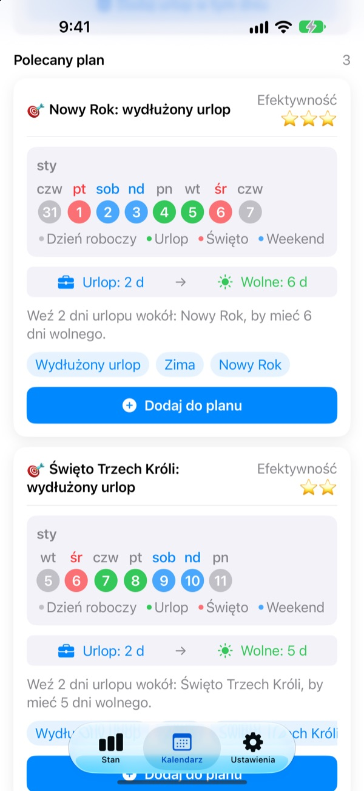
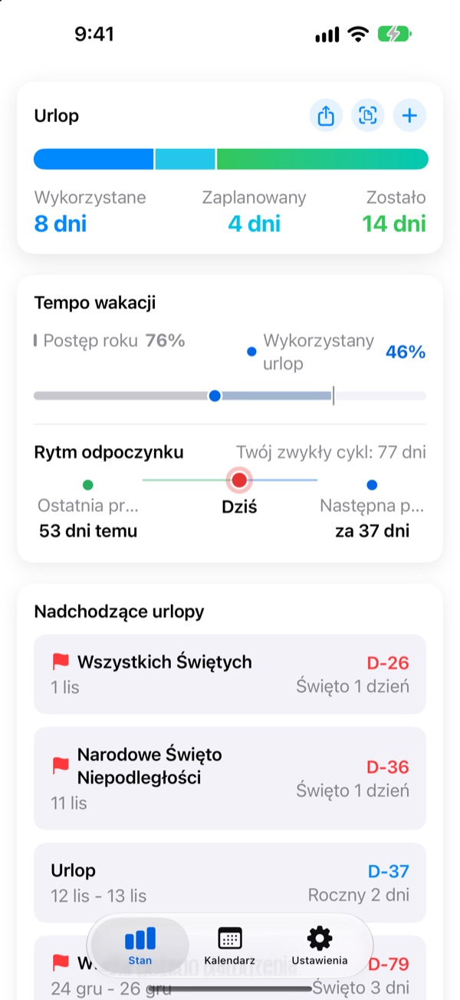
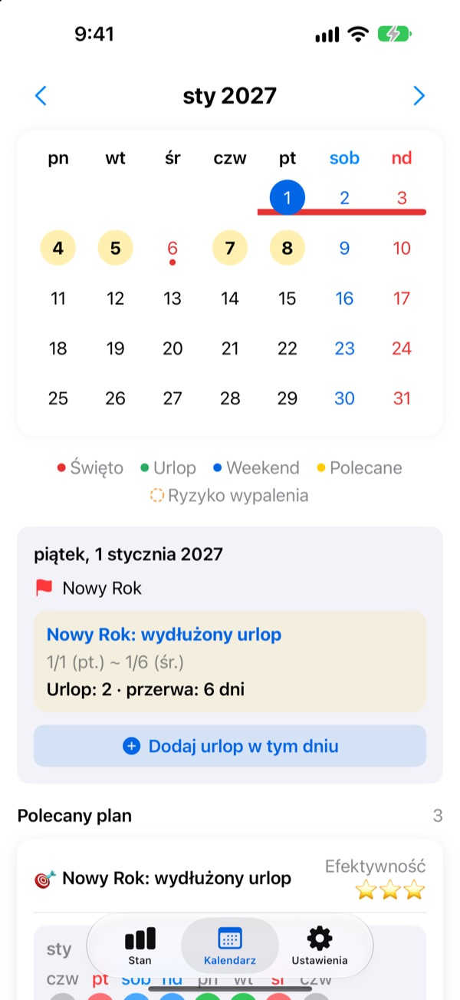
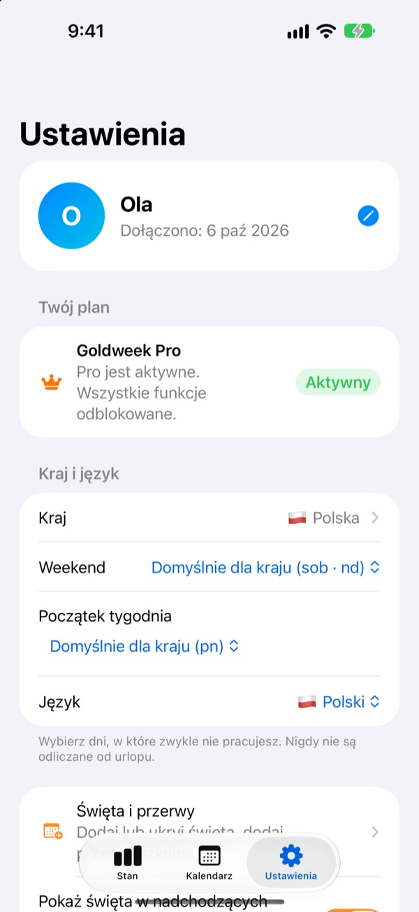

Mało dni urlopu,
długie wolne
Goldweek łączy święta z weekendami i pokazuje dokładnie, w które dni wziąć urlop, żeby mieć jak najdłuższe wolne. Koniec z kartkowaniem kalendarza i liczeniem.
Pobieranie za darmo. Ewidencja urlopu i propozycje pozostają darmowe.

Jak daleko sięga twój urlop?
Wybierz, ile dni urlopu możesz wziąć. Zobaczysz najdłuższe wolne, jakie dają wokół najbliższych świąt.
Masz dość liczenia dni w kalendarzu?
Czwartek jest świętem, brać piątek? Czy zostawić dzień na długi weekend w przyszłym miesiącu? Po kartkowaniu kalendarza i tak bierzesz wolne w przypadkowy dzień, a w grudniu niewykorzystany urlop przepada. Goldweek liczy za ciebie i pokazuje dni, dzięki którym urlop starcza najdłużej.
Urlop w jednym rzucie oka
Łącznie, wykorzystane i pozostałe dni na jednym ekranie. Obok widać, jaka część roku minęła i ile urlopu już wykorzystałeś, więc od razu wiesz, czy nie odkładasz za dużo.
Pozostałe dni i najbliższe wolne pokazuje widżet na ekranie początkowym.

Wolne prosto w kalendarzu
Święta, urlop i proponowane dni pomostowe są w kalendarzu oznaczone kolorami. Stuknij datę, aby dodać lub zmienić wolne, także pół dnia, ćwierć dnia albo godziny.
Wcześniejszy urlop przeniesiesz za jednym razem ze zdjęcia ekranu z systemu kadrowego.

Twój kraj, twój czas pracy
Święta 42 krajów, od Polski przez resztę Europy po Azję i Amerykę. Gdzie święta różnią się w zależności od regionu, wybierasz swój. Brakuje twojego kraju? Dodaj własne święta.
Ustawisz też dni weekendu, pierwszy dzień tygodnia oraz pracę na stały etat, w niepełnym wymiarze lub zmianową.

Start w trzech krokach
- 1
Powiedz, gdzie pracujesz
Przy pierwszym uruchomieniu wybierz kraj i liczbę dni urlopu w roku.
- 2
Wybierz propozycję
Na karcie Kalendarz są proponowane okresy wolnego. Dodaj te, które ci pasują.
- 3
Zapisuj urlop
Stuknij datę albo przenieś wcześniejszy urlop ze zdjęcia.
Jak to jest liczone
- Cały dzień
- 1 dzień z puli
- Pół dnia
- 0,5 dnia
- Ćwierć dnia
- 0,25 dnia
- Godziny
- Według twoich godzin pracy w tym dniu
- Zwolnienie lekarskie, urlop okolicznościowy, delegacja
- Nie są odliczane od urlopu
- Urlop bonusowy
- Dodatkowe dni jak wolne za nadgodziny, liczone osobno z datą ważności (Pro)
Liczbę dni urlopu w roku i miesiąc, od którego zaczyna się twój rok urlopowy, zmienisz w każdej chwili w Ustawieniach.
Dobry odpoczynek jest za darmo. Planowanie biorą na siebie Plus i Pro.
Za darmo
- Całe dni, połówki, ćwiartki i godziny oraz pozostały urlop
- Święta 42 krajów, własne święta i ferie
- Wszystkie propozycje na ten rok, do 3 w planie
- Wskazówki o przerwach na odpoczynek, przypomnienia i widżet
- Dodaj urlop ze zdjęcia
- Kopia w iCloud i wspólny plan z rodziną
Plus i Pro
- Plus: Optymalny planer roczny
- Plus: Nielimitowane propozycje, także na zeszły i przyszły rok
- Plus: Wysyłanie wolnego do aplikacji Kalendarz
- Pro: Wszystko z Plus, urlop bonusowy, roczne limity i przenoszenie według rodzaju
- Pro: Import kalendarza szkolnego i automatyczne wykrywanie kalendarza
- Pro: Wspólne wolne i rodzinne rocznice
Każdy poziom jest dostępny jako subskrypcja roczna albo jednorazowy zakup na zawsze.
Subskrypcja roczna odnawia się automatycznie, jeśli nie wyłączysz jej co najmniej 24 godziny przed końcem okresu. Zarządzaj nią w dowolnej chwili w Ustawienia > Konto Apple > Subskrypcje.
Częste pytania
Saldo urlopu się nie zgadza.
Sprawdź w Ustawieniach, w którym miesiącu zaczyna się twój rok urlopowy i ile masz łącznie dni urlopu. Pół dnia (0,5) i ćwierć dnia (0,25) odliczają się automatycznie, a rodzaje, które się nie liczą, jak zwolnienie lekarskie, urlop okolicznościowy czy delegacja, nie zmieniają salda. Jeśli dalej się nie zgadza, napisz do nas.
Urlop nie pojawia się w kalendarzu.
Odwołany urlop nie jest pokazywany w kalendarzu. Sprawdź status wpisu w Zarządzaniu urlopem. Pomóc może też aktualizacja do najnowszej wersji.
Jak dodać urlop bonusowy?
Stuknij + na karcie Stan, aby otworzyć Zarządzanie urlopem, i skorzystaj z sekcji Urlop bonusowy na dole. Wybierz rodzaj (wolne za nadgodziny, nagroda, urlop regeneracyjny…), podaj liczbę dni i, jeśli chcesz, datę ważności. Urlop bonusowy jest liczony osobno od zwykłego.
Zapłaciłem, ale nic się nie odblokowało.
Stuknij Przywróć zakup na dole karty Ustawienia. Zakup zostanie przywrócony z Konta Apple, na które jesteś zalogowany w App Store. Jeśli to nie pomoże, napisz do nas.
Czy stracę dane, jeśli usunę aplikację?
Dane są przechowywane na urządzeniu, więc usunięcie aplikacji je kasuje. Włącz kopię zapasową w iCloud, żeby mieć kopię do późniejszego przywrócenia.
Czy mogę dodać własne święta albo ukryć niektóre?
Tak. W sekcji Święta i przerwy w Ustawieniach dodasz własne święta albo ukryjesz domyślne.
Jakie kraje są obsługiwane?
Goldweek zna święta 42 krajów. Wybierz kraj w Ustawieniach (i region, gdzie święta się różnią), a kalendarz od razu się zaktualizuje. Jeśli twojego kraju brakuje, dodaj święta samodzielnie albo poproś o niego przez opinię w aplikacji.
Gdzie są przechowywane moje dane?
To, co wpisujesz, zostaje na urządzeniu albo w twoim własnym iCloud. Otrzymujemy tylko anonimowe statystyki użycia, anonimowe raporty o awariach i opinie, które sam zdecydujesz się wysłać.
We wszystkich sprawach, na które nie ma odpowiedzi powyżej, z pomysłami albo błędami pisz na leeo@kakao.com. Zwykle odpowiadamy w ciągu jednego lub dwóch dni roboczych.